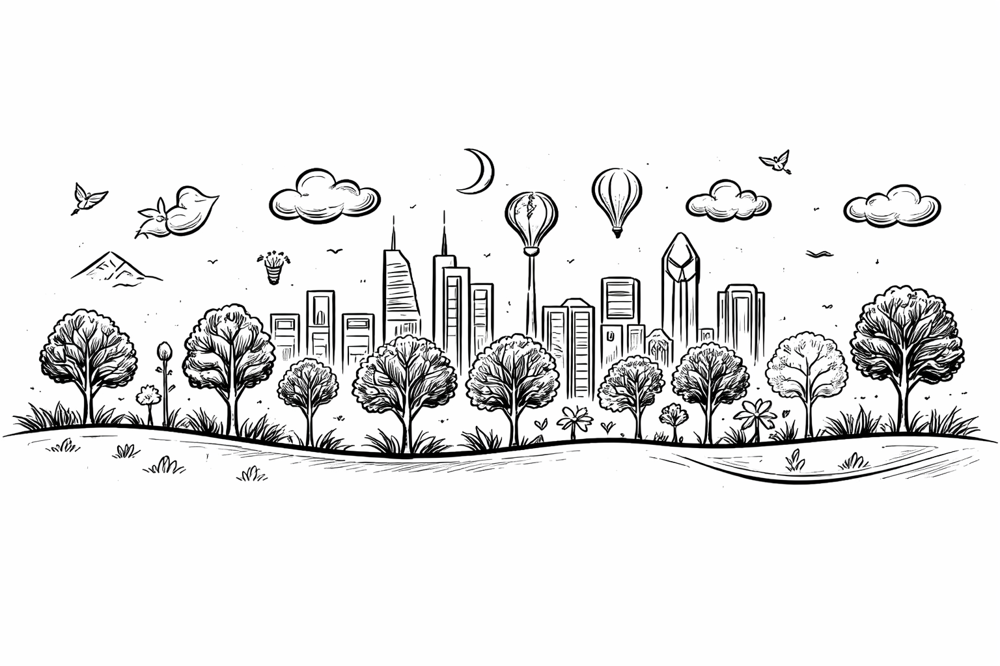
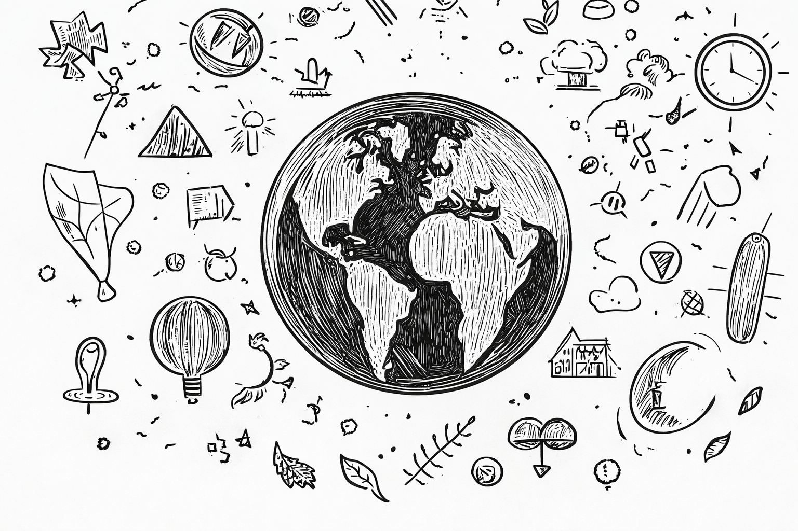

Our Mission
To make sustainability work for SMEs by turning complex ESG standards into practical, community-validated guidance that unlocks measurable, responsible growth.

Our Vision
A world where sustainability is practical, inclusive, and led by SMEs – powered by collective expertise and proven in real-world application.
Our Values
Sustainability only works if it works in practice – especially for SMEs. We value clarity over complexity, collaboration over silos, and real progress over perfection on paper.
Through shared expertise and structured frameworks, we open up accessible routes for businesses to move toward measurable, responsible growth.

Our Story
STIF began with a simple observation: ESG frameworks were built for large institutions, but smaller businesses were being asked to play by the same rules with a fraction of the resources.
Sustainability professionals wanted to help change that. They had the insight, but not always the platform to bring it into the daily reality of SMEs. STIF exists to close that gap.
By combining community-validated ESG expertise with clear, step-by-step guidance, we turn complex standards into manageable actions for real businesses.
We are building more than a platform. We are building a framework where shared expertise drives inclusive progress and enables SMEs everywhere to grow responsibly and confidently.